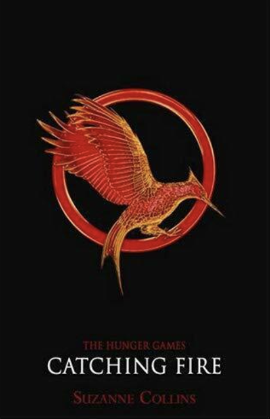
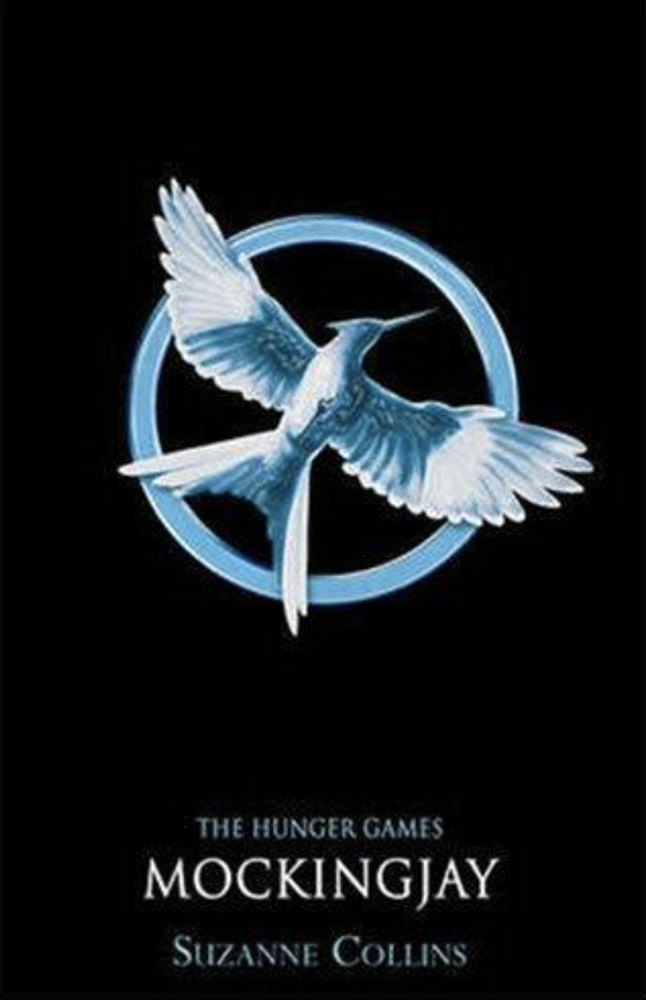
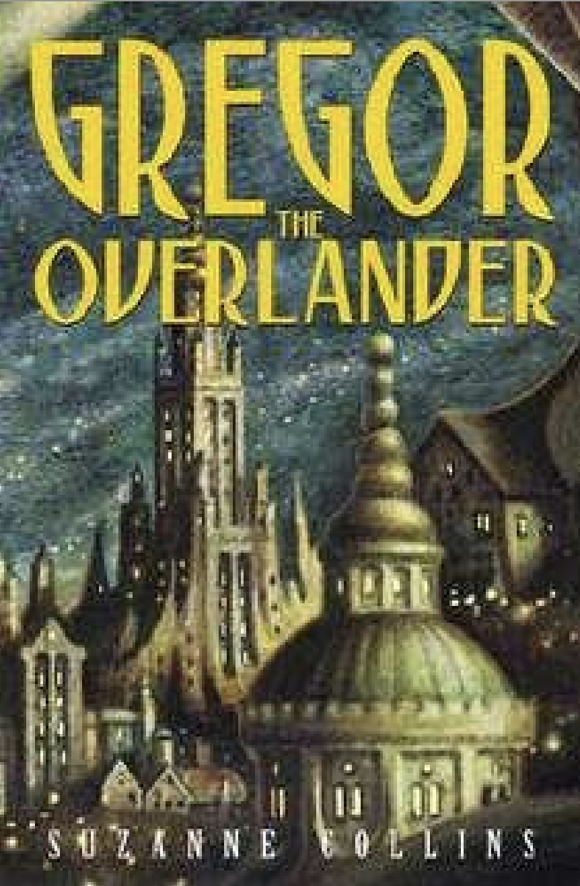
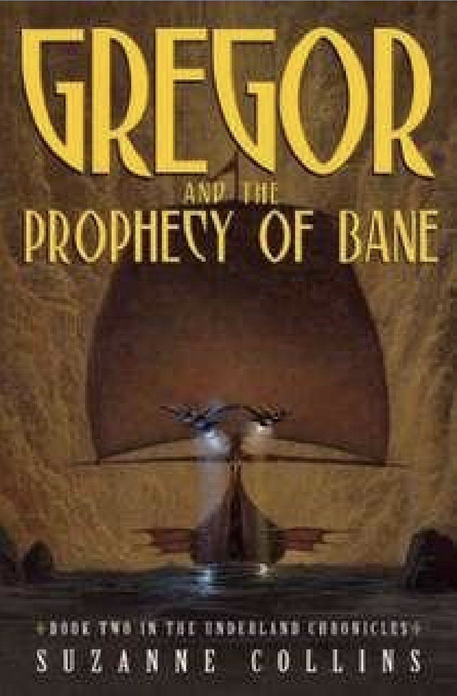
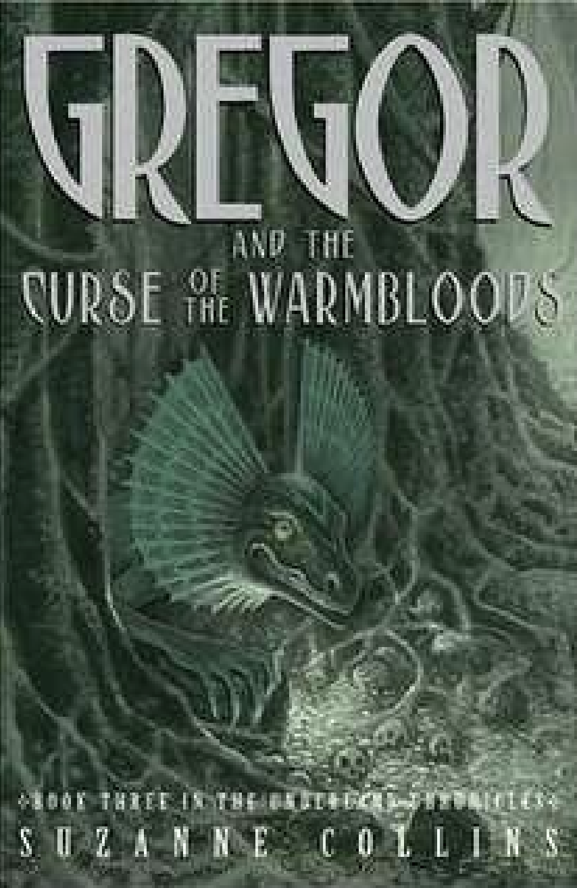
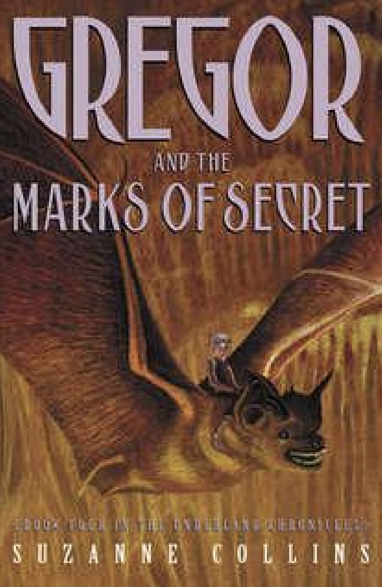
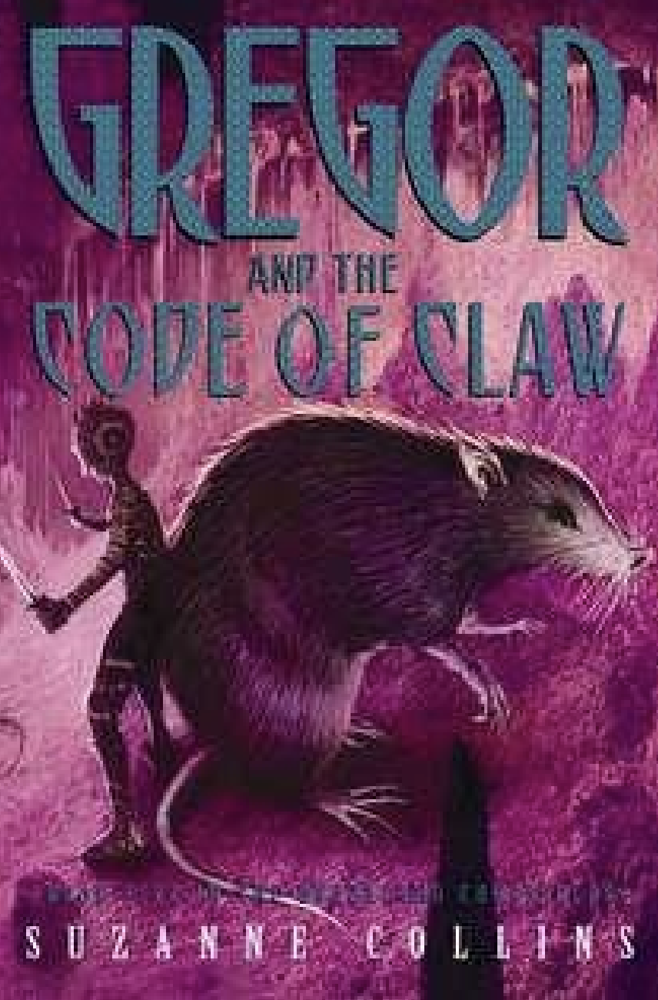

In a dystopian society where teenagers fight to the death in the live Hunger Games event, 14-year-old Katniss Everdeen decides to take her little sister's place in the arena to save her life.
Katniss and Peeta Mellark have just won the 74th Hunger Games and are returning home to District 12 to get some rest. But it doesn't take long for Katniss to realize that people are unhappy with the Capitol's rule and that rebellion is in the air.
In a dystopian society where teenagers fight to the death in the live Hunger Games event, 14-year-old Katniss Everdeen decides to take her little sister's place in the arena to save her life.
When Gregor falls through a grate in the laundry room of his apartment building, he hurtles into the dark Underland, where spiders, rats, cockroaches coexist uneasily with humans. This world is on the brink of war, and Gregor's arrival is no accident.
Months have passed since Gregor first fell into the strange Underland beneath New York City, and he swears he will never go back. But he is destined to be a key player in another prophecy, this one about an ominous white rat called the Bane. The Underlanders know there is only one way to lure Gregor back to their world: by kidnapping his little sister, Boots.
With two prophecies fulfilled, Gregor is now focused on the Prophecy of Blood, which calls for Gregor and "the princess," Boots, to return to the Underland to help ward off a plague. His mom agrees to let them go - on the condition that she travels with them.When they arrive in the subterranean city, the plague is spreading--and one of Gregor's family is stricken.
Gregor is drawn into a crisis. For generations, rats have run the mice--or "nibblers"--out of whatever lands they've claimed, keeping them on the move. But now the mice are disappearing, and the young queen Luxa is determined to find out why.
Everyone in the Underland has been taking great pains to keep The Prophecy of Time from Gregor. Gregor suspected it says something awful but he never imagined just how awful: It calls for the warrior's death. Now, with an army of rats approaching and his mom and sister still in Regalia, Gregor the warrior must gather up his courage to help defend Regalia and get his family home safely.
